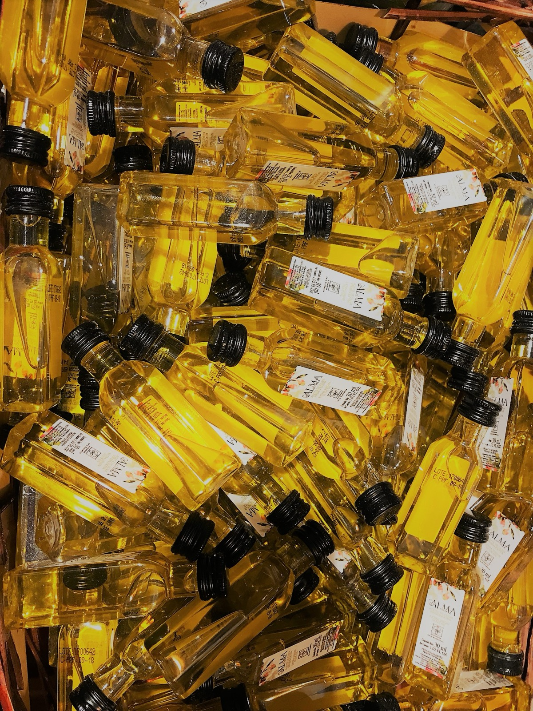
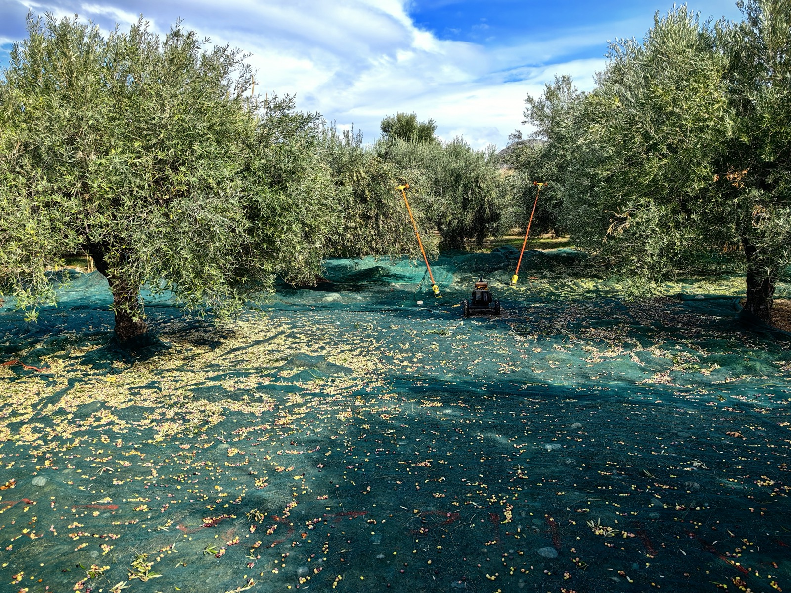
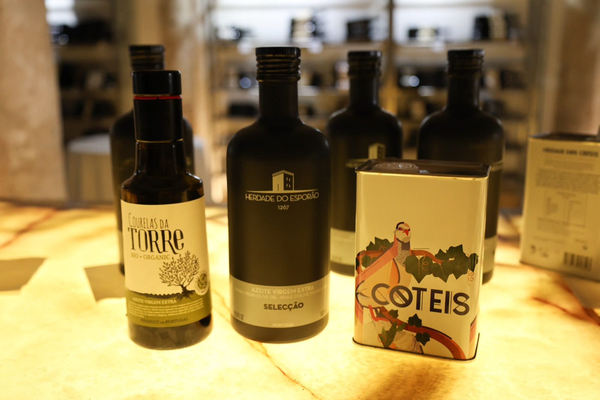
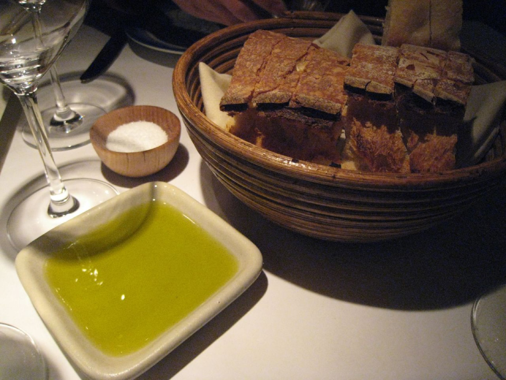

Zeytinyağı Rehberi
Ahrefs verisindeki en güçlü zeytinyağı sorguları için hazırlanan 100 rehber sayfası. Her içerik parent keyword bağlamı düşünülerek yazıldı; benzer konular, markalar ve kategori geçişleriyle iç bağlantı ağı kuruldu.

Zeytinyağı: seçim, kalite ve kullanım rehberi
Zeytinyağı seçerken tek bir ölçüte bakmak yetmez. Yağın sınıfı, tazeliği, bölgesi, ambalajı ve nerede kullanılacağı birlikte değerlendirilmelidir. Zeytin yağ...

Zeytinyağı fiyatları: fiyatı nasıl yorumlamalı?
Zeytinyağında doğru fiyat, yalnızca en düşük etiketi bulmak değildir. Aynı hacimdeki iki ürün arasında sınıf, hasat zamanı, ambalaj, bölge ve marka güveni ci...
Zeytinyağı 5 litre: fiyatı nasıl yorumlamalı?
Zeytinyağında doğru fiyat, yalnızca en düşük etiketi bulmak değildir. Aynı hacimdeki iki ürün arasında sınıf, hasat zamanı, ambalaj, bölge ve marka güveni ci...
Zeytinyağı faydaları: araştırma, kullanım ve sınırlar
Zeytinyağının beslenmede yeri güçlüdür; ancak internette dolaşan çok geniş sağlık iddialarının önemli bölümü abartılıdır. Doğru yaklaşım, onu dengeli bir bes...

Sızma zeytinyağı: ne demek, nasıl seçilir?
Sızma zeytinyağı, tazelik ve duyusal denge arayan kullanıcıların başlangıç noktasıdır. Zeytinyağı parent keyword bağlamı ve ilgili marka/kategori geçişleri d...
Zeytinyağı kilo aldırır mı: araştırma, kullanım ve sınırlar
Zeytinyağı ne tek başına zayıflatan ne de otomatik kilo aldıran bir ürün değildir. Sonuç, toplam enerji dengesi ve porsiyonla belirlenir. Zeytinyağı içmek ki...
Migros zeytinyağı: marka ve ürün değerlendirmesi
Migros zeytinyağı araması çoğu zaman belirli bir market rafındaki seçenekleri kıyaslama niyeti taşır. Burada kritik olan, market adı değil aynı raftaki ürün...
Göbek deliğine zeytinyağı sürmek: ciltte kullanım rehberi
Göbek deliğine zeytinyağı sürmenin internette dolaşan geniş fayda iddiaları için güçlü kanıt yoktur. Hijyen ve tahriş riski düşünülmeden yapılmamalıdır. Sayf...
Yüze zeytinyağı sürmenin faydası: ciltte kullanım rehberi
Yüze zeytinyağı sürmek bazı kişilerde yumuşatma hissi verirken bazı cilt tiplerinde ağırlık ve tahriş yaratabilir. Mucize çözüm gibi düşünmek doğru değildir....
Zeytinyağı kalori: gram ve kalori hesabı
Standart hesapta 1 yemek kaşığı zeytinyağı yaklaşık 119-120 kcal kabul edilir. Enerji değeri ürünün sızma ya da riviera olmasından çok miktarına bağlıdır. 1...
1 yemek kaşığı zeytinyağı kaç gr: gram ve kalori hesabı
Standart beslenme hesaplarında 1 yemek kaşığı zeytinyağı yaklaşık 13,5 gram kabul edilir. Çay kaşığı ve tatlı kaşığı ölçüleri ise kaşığın hacmine göre küçük...
Kulağa zeytinyağı damlatılır mı: güvenli mi, ne zaman kaçınmalı?
Zeytinyağı yalnızca belirli durumlarda, özellikle kulak kiri yumuşatma amacıyla düşünülür. Ağrı, akıntı, delik kulak zarı şüphesi veya enfeksiyon varsa kulla...
Soğuk sıkım zeytinyağı: ne demek, nasıl seçilir?
Soğuk sıkım ifadesi, işleme sırasında sıcaklığın kontrollü tutulduğunu anlatır; amaç aromayı ve kaliteyi daha iyi korumaktır. Soğuk sıkım zeytinyağ parent ke...
Zeytinyağı öksürüğe iyi gelir mi: araştırma, kullanım ve sınırlar
Zeytinyağının öksürüğü tedavi ettiğine dair güçlü klinik kanıt yoktur. Kısa süreli boğaz yumuşatma hissi olabilir; ama inatçı öksürükte standart tıbbi değerl...
Zeytinyağı sarımsak saça faydası: saç bakımında gerçekten işe yarar mı?
Sarımsaklı zeytinyağı karışımları internette sık önerilir; ancak saç çıkarma etkisi için güçlü kanıt yoktur ve tahriş riski belirgindir. Saça sarımsak sürmek...
Bebeğe zeytinyağı verilir mi: bebeklerde güvenli yaklaşım
Bebeklere zeytinyağı verme konusu yaş, kullanım amacı ve eşlik eden sağlık durumuna göre değişir. Özellikle küçük bebeklerde kulaktan dolma öneriyle hareket...
Her gün zeytinyağı içmek: araştırma, kullanım ve sınırlar
Her gün zeytinyağı tüketmek birçok beslenme modelinde yer alabilir; ancak miktar ve toplam günlük enerji dengesi hâlâ belirleyicidir. Gece yatmadan önce zeyt...
Her gün zeytinyağı içmenin faydaları: araştırma, kullanım ve sınırlar
Her gün zeytinyağı tüketmek birçok beslenme modelinde yer alabilir; ancak miktar ve toplam günlük enerji dengesi hâlâ belirleyicidir. Sayfa, benzer arama niy...
Zeytinyağı al: seçim ve karşılaştırma rehberi
Tek bir "en iyi" zeytinyağı yoktur. En iyi tercih, kullanım amacına, damak profiline, bütçeye ve güvendiğiniz üretici yapısına göre değişir. Sayfa, benzer ar...

Zeytinyağı boğazı yakar mı: kalite işareti mi, efsane mi?
Boğazda hafif yakıcılık, özellikle taze ve polifenolü güçlü yağlarda olumlu duyusal işaret olabilir. Ama yakıcılık tek başına kalite veya saflık garantisi de...
Zeytinyağı kabızlığa iyi gelir mi: araştırma, kullanım ve sınırlar
Zeytinyağı bazı kullanıcılar için bağırsak hareketini destekleyen bir beslenme unsuru olabilir; ancak kabızlık ya da ishal gibi durumlarda tek başına tedavi...
Zeytinyağı lekesi çıkar mı: nasıl temizlenir?
Zeytinyağı lekesinde hız çok önemlidir. Yağ yeni döküldüyse önce emdirip sonra yağ çözücü bir temizlik adımı uygulamak genellikle en etkili yaklaşımdır. Zeyt...
Zeytinyağı yüze faydası: ciltte kullanım rehberi
Yüze zeytinyağı sürmek bazı kişilerde yumuşatma hissi verirken bazı cilt tiplerinde ağırlık ve tahriş yaratabilir. Mucize çözüm gibi düşünmek doğru değildir....
Gerçek zeytinyağı buzdolabinda donar mı: buzdolabı testi gerçekten işe yarar mı?
Zeytinyağının soğukta donması ya da bulanıklaşması tek başına saflık kanıtı değildir. Buzdolabı testi popüler olsa da güvenilir kalite doğrulama yöntemi sayı...
Göğüse zeytinyağı sürmek: ciltte kullanım rehberi
Göğse zeytinyağı sürmenin belirli bir hastalığı çözdüğünü söylemek için güçlü kanıt yoktur. Cilt bakımı ile tıbbi şikayet aynı başlık değildir. Göğüse zeytin...
Memecik zeytinyağı: ne demek, nasıl seçilir?
Memecik zeytinyağı genellikle güçlü, aromatik ve belirgin karakter arayan kullanıcıların ilgisini çeker. Sayfa, benzer arama niyetlerinden gelen pratik seçim...
Zeytinyağı bağırsakları çalıştırır mı: araştırma, kullanım ve sınırlar
Zeytinyağının beslenmede yeri güçlüdür; ancak internette dolaşan çok geniş sağlık iddialarının önemli bölümü abartılıdır. Doğru yaklaşım, onu dengeli bir bes...
Zeytinyağı cilde sürülürmü: seçim, kalite ve kullanım rehberi
Zeytinyağı seçerken tek bir ölçüte bakmak yetmez. Yağın sınıfı, tazeliği, bölgesi, ambalajı ve nerede kullanılacağı birlikte değerlendirilmelidir. Sayfa, ben...
Zeytinyağı fiyatı: fiyatı nasıl yorumlamalı?
Zeytinyağında doğru fiyat, yalnızca en düşük etiketi bulmak değildir. Aynı hacimdeki iki ürün arasında sınıf, hasat zamanı, ambalaj, bölge ve marka güveni ci...
Zeytinyağı içmenin faydaları: araştırma, kullanım ve sınırlar
Zeytinyağının beslenmede yeri güçlüdür; ancak internette dolaşan çok geniş sağlık iddialarının önemli bölümü abartılıdır. Doğru yaklaşım, onu dengeli bir bes...
Zeytinyağı ishal yaparmi: araştırma, kullanım ve sınırlar
Zeytinyağı bazı kullanıcılar için bağırsak hareketini destekleyen bir beslenme unsuru olabilir; ancak kabızlık ya da ishal gibi durumlarda tek başına tedavi...

Zeytinyağı kızartma yapilirmi: pişirme ve kızartma rehberi
Zeytinyağı mutfakta kızartma ve pişirme için kullanılabilir; ancak seçilecek yağın profili ve sizin beklentiniz önemlidir. Aromatik, pahalı bir yağı yanlış y...
Zeytinyağı nasıl anlaşılır en iyisi: güvenilir kontrol listesi
Gerçek ve iyi zeytinyağını anlamak için tek bir ev testi yoktur. En güvenilir yaklaşım; etiket, üretici şeffaflığı, duyusal denge ve resmi denetim bilgilerin...
Zeytinyağı saça nasıl uygulanir: saç bakımında gerçekten işe yarar mı?
Zeytinyağı saç bakımında daha çok yumuşatma ve parlaklık amacıyla kullanılır; doğru uygulama miktar ve bölge kontrolüyle yapılır. Saça zeytinyağı sürmek pare...
Zeytinyağı şişesi: doğru şişe ve ambalaj seçimi
Zeytinyağında şişe sadece sunum değil, kalite koruma aracıdır. Işık ve hava ile temas ne kadar iyi yönetilirse yağın karakteri o kadar uzun korunur. Sayfa, b...
1 aylık bebeğe zeytinyağı verilir mi: bebeklerde güvenli yaklaşım
1 aylık bir bebeğe zeytinyağını ağızdan vermek uygun bir rutin değildir. Bu dönemde hekim aksi söylemedikçe temel beslenme anne sütü veya formül üzerinden il...
Ayvalık zeytinyağı: ne demek, nasıl seçilir?
Ayvalık zeytinyağı dengeli meyvemsilik ve erişilebilir içim profiliyle geniş bir kullanıcı kitlesine hitap eder. Sayfa, benzer arama niyetlerinden gelen prat...
Bir kaşık zeytinyağı kaç kaloridir: seçim, kalite ve kullanım rehberi
Zeytinyağı seçerken tek bir ölçüte bakmak yetmez. Yağın sınıfı, tazeliği, bölgesi, ambalajı ve nerede kullanılacağı birlikte değerlendirilmelidir. 1 yemek ka...
En iyi zeytinyağı: seçim ve karşılaştırma rehberi
Tek bir "en iyi" zeytinyağı yoktur. En iyi tercih, kullanım amacına, damak profiline, bütçeye ve güvendiğiniz üretici yapısına göre değişir. En iyi zeytinyağ...
Gerçek zeytinyağı donar mı: buzdolabı testi gerçekten işe yarar mı?
Zeytinyağının soğukta donması ya da bulanıklaşması tek başına saflık kanıtı değildir. Buzdolabı testi popüler olsa da güvenilir kalite doğrulama yöntemi sayı...
Göze zeytinyağı damlatılır mı: güvenli mi, ne zaman kaçınmalı?
Göze steril olmayan zeytinyağı damlatmak uygun bir yaklaşım değildir. Göz; steril, hassas ve tıbbi açıdan riskli bir alandır. Sayfa, benzer arama niyetlerind...
Guvenasa zeytinyağı: marka ve ürün değerlendirmesi
Guvenasa zeytinyağı gibi marka sorgularında önce resmi site, üretici bilgisi, ürün sınıfı ve varsa bölgesel köken kontrol edilmelidir. İsme bakarak karar ver...

Kristal zeytinyağı: marka ve ürün değerlendirmesi
Kristal için doğru değerlendirme; markanın ürün sınıfı, seri yapısı, bölgesi ve sizin kullanım amacınız birlikte düşünülerek yapılmalıdır. Sayfa, benzer aram...
Makasci özcan zeytinyağı fabrikası: marka ve ürün değerlendirmesi
Makasci özcan zeytinyağı fabrikası gibi marka sorgularında önce resmi site, üretici bilgisi, ürün sınıfı ve varsa bölgesel köken kontrol edilmelidir. İsme ba...
Saç boyasina zeytinyağı katilirmi: saç bakımında gerçekten işe yarar mı?
Saç boyasına zeytinyağı eklemek ürünün performansını öngörülemez biçimde değiştirebilir. Üreticinin formülüne dışarıdan müdahale etmek her zaman iyi fikir de...
Sarımsak zeytinyağı saça faydası: saç bakımında gerçekten işe yarar mı?
Sarımsaklı zeytinyağı karışımları internette sık önerilir; ancak saç çıkarma etkisi için güçlü kanıt yoktur ve tahriş riski belirgindir. Zeytinyağı ve sarıms...
Yoğurt çörek otu zeytinyağı karışımı faydaları: araştırma, kullanım ve sınırlar
Yoğurt, çörek otu, sarımsak, limon ya da sirke ile yapılan karışımlar popülerdir; fakat bunların çoğu için tedavi düzeyinde kanıt sınırlıdır. Karışımın doğal...
Yoğurt çörek otu zeytinyağı: araştırma, kullanım ve sınırlar
Yoğurt, çörek otu, sarımsak, limon ya da sirke ile yapılan karışımlar popülerdir; fakat bunların çoğu için tedavi düzeyinde kanıt sınırlıdır. Karışımın doğal...
Zeytinyağı bozulur mu: güvenilir kontrol listesi
Gerçek ve iyi zeytinyağını anlamak için tek bir ev testi yoktur. En güvenilir yaklaşım; etiket, üretici şeffaflığı, duyusal denge ve resmi denetim bilgilerin...
Zeytinyağı kirpikleri uzatirmi: seçim, kalite ve kullanım rehberi
Zeytinyağı seçerken tek bir ölçüte bakmak yetmez. Yağın sınıfı, tazeliği, bölgesi, ambalajı ve nerede kullanılacağı birlikte değerlendirilmelidir. Sayfa, ben...
Zeytinyağı saç çıkarır mı: saç bakımında gerçekten işe yarar mı?
Zeytinyağı saç telini yumuşatabilir; fakat yeni saç çıkarması için güçlü kanıt yoktur. Sayfa, benzer arama niyetlerinden gelen pratik seçim ve kullanım sorul...
Zeytinyağı saça faydaları: saç bakımında gerçekten işe yarar mı?
Zeytinyağı saç tellerini yumuşatmaya yardımcı olabilir; ancak internetin büyüttüğü birçok saç çıkarma iddiası kanıt açısından zayıftır. Saça zeytinyağı sürme...
1 çay kaşığı zeytinyağı kalori: gram ve kalori hesabı
Standart hesapta 1 yemek kaşığı zeytinyağı yaklaşık 119-120 kcal kabul edilir. Enerji değeri ürünün sızma ya da riviera olmasından çok miktarına bağlıdır. Sa...
1 tatlı kaşığı zeytinyağı kaç gr: gram ve kalori hesabı
Standart beslenme hesaplarında 1 yemek kaşığı zeytinyağı yaklaşık 13,5 gram kabul edilir. Çay kaşığı ve tatlı kaşığı ölçüleri ise kaşığın hacmine göre küçük...
1 yemek kaşığı zeytinyağı kaç kalori: gram ve kalori hesabı
Standart hesapta 1 yemek kaşığı zeytinyağı yaklaşık 119-120 kcal kabul edilir. Enerji değeri ürünün sızma ya da riviera olmasından çok miktarına bağlıdır. Sa...
Aç karnına zeytinyağı içmenin zararlari: araştırma, kullanım ve sınırlar
Her gün zeytinyağı tüketmek birçok beslenme modelinde yer alabilir; ancak miktar ve toplam günlük enerji dengesi hâlâ belirleyicidir. Sayfa, benzer arama niy...
Bebek zeytinyağı: bebeklerde güvenli yaklaşım
Bebek zeytinyağı ifadesi bazen kozmetik bazen de yenilebilir ürün anlamında kullanılır. Bu iki kullanım alanını birbirine karıştırmamak gerekir. Sayfa, benze...
BİM’de zeytinyağı fiyatı: marka ve ürün değerlendirmesi
BİM’de zeytinyağı fiyatı araması çoğu zaman belirli bir market rafındaki seçenekleri kıyaslama niyeti taşır. Burada kritik olan, market adı değil aynı raftak...
Bir tatlı kaşığı zeytinyağı kalori: gram ve kalori hesabı
Standart hesapta 1 yemek kaşığı zeytinyağı yaklaşık 119-120 kcal kabul edilir. Enerji değeri ürünün sızma ya da riviera olmasından çok miktarına bağlıdır. Sa...
Çörek otu sarımsak zeytinyağı karışımı faydaları: araştırma, kullanım ve sınırlar
Yoğurt, çörek otu, sarımsak, limon ya da sirke ile yapılan karışımlar popülerdir; fakat bunların çoğu için tedavi düzeyinde kanıt sınırlıdır. Karışımın doğal...

Komili zeytinyağı: marka ve ürün değerlendirmesi
Komili için doğru değerlendirme; markanın ürün sınıfı, seri yapısı, bölgesi ve sizin kullanım amacınız birlikte düşünülerek yapılmalıdır. Komili zeytinyağı p...
Kuru incir ve zeytinyağı faydaları: araştırma, kullanım ve sınırlar
Yoğurt, çörek otu, sarımsak, limon ya da sirke ile yapılan karışımlar popülerdir; fakat bunların çoğu için tedavi düzeyinde kanıt sınırlıdır. Karışımın doğal...
Limon zeytinyağı böbrek taşını eritirmi: araştırma, kullanım ve sınırlar
Zeytinyağı-limon gibi karışımların böbrek taşı eritmesi ya da kireçlenmeyi çözmesi için güçlü klinik kanıt yoktur. Bu tür iddialar tedaviyi geciktirmemelidir...
Makata zeytinyağı sürülür mü: ciltte kullanım rehberi
Makata zeytinyağı sürmek hassas bir bölge uygulamasıdır; tahriş, enfeksiyon ve altta yatan problem ihtimali nedeniyle rastgele öneriyle yapılmamalıdır. Sayfa...
Nermin Hanım zeytinyağı: marka ve ürün değerlendirmesi
Nermin Hanım zeytinyağı gibi marka sorgularında önce resmi site, üretici bilgisi, ürün sınıfı ve varsa bölgesel köken kontrol edilmelidir. İsme bakarak karar...
Sarımsak ve zeytinyağı saç çıkarır mı: saç bakımında gerçekten işe yarar mı?
Sarımsaklı zeytinyağı karışımları internette sık önerilir; ancak saç çıkarma etkisi için güçlü kanıt yoktur ve tahriş riski belirgindir. Sayfa, benzer arama...

Tariş zeytinyağı alım fiyatı: marka ve ürün değerlendirmesi
Tariş için doğru değerlendirme; markanın ürün sınıfı, seri yapısı, bölgesi ve sizin kullanım amacınız birlikte düşünülerek yapılmalıdır. Tariş zeytinyağı fiy...
Zerdeçal karabiber zeytinyağı karışımı zayıflatır mı: araştırma, kullanım ve sınırlar
Zeytinyağı ne tek başına zayıflatan ne de otomatik kilo aldıran bir ürün değildir. Sonuç, toplam enerji dengesi ve porsiyonla belirlenir. Sayfa, benzer arama...
Zeytinyağı aç karnına icilirmi: araştırma, kullanım ve sınırlar
Her gün zeytinyağı tüketmek birçok beslenme modelinde yer alabilir; ancak miktar ve toplam günlük enerji dengesi hâlâ belirleyicidir. Sayfa, benzer arama niy...
Zeytinyağı gerçek mi nasıl anlaşılır: güvenilir kontrol listesi
Gerçek ve iyi zeytinyağını anlamak için tek bir ev testi yoktur. En güvenilir yaklaşım; etiket, üretici şeffaflığı, duyusal denge ve resmi denetim bilgilerin...
Zeytinyağı içmek: araştırma, kullanım ve sınırlar
Her gün zeytinyağı tüketmek birçok beslenme modelinde yer alabilir; ancak miktar ve toplam günlük enerji dengesi hâlâ belirleyicidir. Zeytinyağı içmenin fayd...
Zeytinyağı içmek kabızlığa iyi gelir mi: araştırma, kullanım ve sınırlar
Zeytinyağı bazı kullanıcılar için bağırsak hareketini destekleyen bir beslenme unsuru olabilir; ancak kabızlık ya da ishal gibi durumlarda tek başına tedavi...
Zeytinyağı ile kızartma olur mu: pişirme ve kızartma rehberi
Zeytinyağı mutfakta kızartma ve pişirme için kullanılabilir; ancak seçilecek yağın profili ve sizin beklentiniz önemlidir. Aromatik, pahalı bir yağı yanlış y...
Zeytinyağı kabızlığa iyi gelir mi: araştırma, kullanım ve sınırlar
Zeytinyağı bazı kullanıcılar için bağırsak hareketini destekleyen bir beslenme unsuru olabilir; ancak kabızlık ya da ishal gibi durumlarda tek başına tedavi...
Zeytinyağı kaç yil dayanir: saklama ve raf ömrü rehberi
Zeytinyağı bozulabilir; ışık, sıcaklık ve hava teması kaliteyi düşürür. Dayanım süresi markaya, ambalaja ve saklama koşuluna göre değişir. Sayfa, benzer aram...
Zeytinyağı kilosu: fiyatı nasıl yorumlamalı?
Zeytinyağında doğru fiyat, yalnızca en düşük etiketi bulmak değildir. Aynı hacimdeki iki ürün arasında sınıf, hasat zamanı, ambalaj, bölge ve marka güveni ci...
Zeytinyağı kızartmada kullanılır mı: pişirme ve kızartma rehberi
Zeytinyağı mutfakta kızartma ve pişirme için kullanılabilir; ancak seçilecek yağın profili ve sizin beklentiniz önemlidir. Aromatik, pahalı bir yağı yanlış y...
Zeytinyağı kolesterolu yükseltir mi: araştırma, kullanım ve sınırlar
Zeytinyağının beslenmede yeri güçlüdür; ancak internette dolaşan çok geniş sağlık iddialarının önemli bölümü abartılıdır. Doğru yaklaşım, onu dengeli bir bes...
Zeytinyağı limon kireçlenmeye iyi gelir mi: araştırma, kullanım ve sınırlar
Yoğurt, çörek otu, sarımsak, limon ya da sirke ile yapılan karışımlar popülerdir; fakat bunların çoğu için tedavi düzeyinde kanıt sınırlıdır. Karışımın doğal...
Zeytinyağı limon sirke karışımı faydaları: araştırma, kullanım ve sınırlar
Yoğurt, çörek otu, sarımsak, limon ya da sirke ile yapılan karışımlar popülerdir; fakat bunların çoğu için tedavi düzeyinde kanıt sınırlıdır. Karışımın doğal...
Zeytinyağı markaları: seçim ve karşılaştırma rehberi
Tek bir "en iyi" zeytinyağı yoktur. En iyi tercih, kullanım amacına, damak profiline, bütçeye ve güvendiğiniz üretici yapısına göre değişir. Sayfa, benzer ar...
Zeytinyağı saça sürülür mü: saç bakımında gerçekten işe yarar mı?
Zeytinyağı saç bakımında daha çok yumuşatma ve parlaklık amacıyla kullanılır; doğru uygulama miktar ve bölge kontrolüyle yapılır. Saça zeytinyağı sürmek pare...
Zeytinyağı saçta ne kadar kalmali: saç bakımında gerçekten işe yarar mı?
Zeytinyağını saçta bırakma süresi saç tipine göre değişir; çoğu kullanıcı için kısa, kontrollü uygulama daha dengeli sonuç verir. Zeytinyağı ile saç bakımı p...
Zeytinyağı vücuda sürülür mü: ciltte kullanım rehberi
Vücuda zeytinyağı sürmek kuru bölgelerde kayganlık ve yumuşama hissi verebilir; fakat her cilt tipine uygun değildir. Sayfa, benzer arama niyetlerinden gelen...
Zeytinyağı yüze sürülür mü: ciltte kullanım rehberi
Yüze zeytinyağı sürmek bazı kişilerde yumuşatma hissi verirken bazı cilt tiplerinde ağırlık ve tahriş yaratabilir. Mucize çözüm gibi düşünmek doğru değildir....
Zeytinyağı zayıflatır mı: araştırma, kullanım ve sınırlar
Zeytinyağı ne tek başına zayıflatan ne de otomatik kilo aldıran bir ürün değildir. Sonuç, toplam enerji dengesi ve porsiyonla belirlenir. Zeytinyağı faydalar...
1 kaşık zeytinyağı kaç kalori: gram ve kalori hesabı
Standart hesapta 1 yemek kaşığı zeytinyağı yaklaşık 119-120 kcal kabul edilir. Enerji değeri ürünün sızma ya da riviera olmasından çok miktarına bağlıdır. Sa...
1 kaşık zeytinyağı kalori: gram ve kalori hesabı
Standart hesapta 1 yemek kaşığı zeytinyağı yaklaşık 119-120 kcal kabul edilir. Enerji değeri ürünün sızma ya da riviera olmasından çok miktarına bağlıdır. Sa...
5 lt sızma zeytinyağı fiyat: fiyatı nasıl yorumlamalı?
Zeytinyağında doğru fiyat, yalnızca en düşük etiketi bulmak değildir. Aynı hacimdeki iki ürün arasında sınıf, hasat zamanı, ambalaj, bölge ve marka güveni ci...
5 lt zeytinyağı: fiyatı nasıl yorumlamalı?
Zeytinyağında doğru fiyat, yalnızca en düşük etiketi bulmak değildir. Aynı hacimdeki iki ürün arasında sınıf, hasat zamanı, ambalaj, bölge ve marka güveni ci...
Aç karnına zeytinyağı icilirmi: araştırma, kullanım ve sınırlar
Her gün zeytinyağı tüketmek birçok beslenme modelinde yer alabilir; ancak miktar ve toplam günlük enerji dengesi hâlâ belirleyicidir. Sayfa, benzer arama niy...
Aç karnına zeytinyağı içmek mideye iyi gelir mi: araştırma, kullanım ve sınırlar
Her gün zeytinyağı tüketmek birçok beslenme modelinde yer alabilir; ancak miktar ve toplam günlük enerji dengesi hâlâ belirleyicidir. Sayfa, benzer arama niy...
Bebeklere zeytinyağı verilir mi: bebeklerde güvenli yaklaşım
Bebeklere zeytinyağı verme konusu yaş, kullanım amacı ve eşlik eden sağlık durumuna göre değişir. Özellikle küçük bebeklerde kulaktan dolma öneriyle hareket...
Cig yumurta sarisi zeytinyağı limon: araştırma, kullanım ve sınırlar
Yoğurt, çörek otu, sarımsak, limon ya da sirke ile yapılan karışımlar popülerdir; fakat bunların çoğu için tedavi düzeyinde kanıt sınırlıdır. Karışımın doğal...
Çocuğa zeytinyağı içirmek: bebeklerde güvenli yaklaşım
Çocuğa zeytinyağı içirmek şeklindeki uygulamalar rutin çözüm gibi görülmemelidir. Kullanım amacı mutlaka net olmalı ve pediatrik değerlendirme öncelik taşıma...
Dikmaksan ev tipi zeytinyağı makinası fiyatları: ev tipi makine rehberi
Ev tipi zeytinyağı makinası araştırırken yalnızca cihaz fiyatına bakmak yeterli değildir. Kapasite, temizlik, verim, servis ve gerçek kullanım sıklığı birlik...
Dogal zeytinyağı fiyat: fiyatı nasıl yorumlamalı?
Zeytinyağında doğru fiyat, yalnızca en düşük etiketi bulmak değildir. Aynı hacimdeki iki ürün arasında sınıf, hasat zamanı, ambalaj, bölge ve marka güveni ci...
En iyi zeytinyağı markasi: seçim ve karşılaştırma rehberi
Tek bir "en iyi" zeytinyağı yoktur. En iyi tercih, kullanım amacına, damak profiline, bütçeye ve güvendiğiniz üretici yapısına göre değişir. Sayfa, benzer ar...
Gemici zeytinyağı: marka ve ürün değerlendirmesi
Gemici zeytinyağı gibi marka sorgularında önce resmi site, üretici bilgisi, ürün sınıfı ve varsa bölgesel köken kontrol edilmelidir. İsme bakarak karar verme...
Gerçek zeytinyağı boğazı yakar mı: kalite işareti mi, efsane mi?
Boğazda hafif yakıcılık, özellikle taze ve polifenolü güçlü yağlarda olumlu duyusal işaret olabilir. Ama yakıcılık tek başına kalite veya saflık garantisi de...